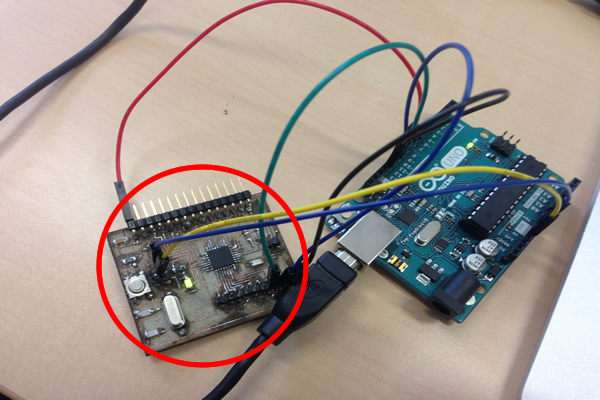
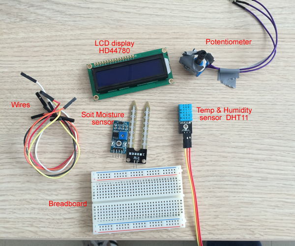
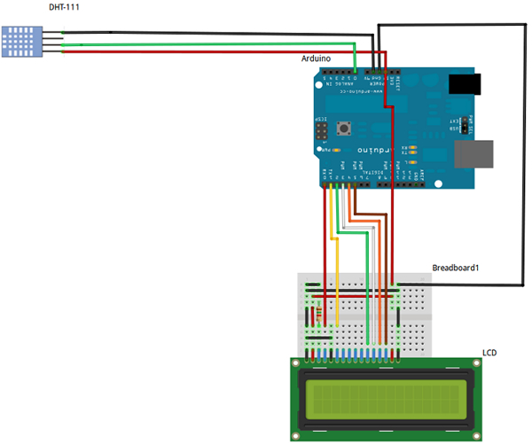
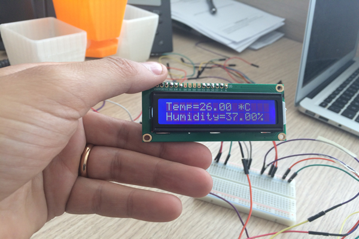

During this week we've learned about how to use electronic output components, add them to the board and then read input data.
The assignment of this week is to add an output device to a microcontroller board and program it to do something
I used the satshakit scheme of my colleague Daniele Ingrassia, , this board I already used it in the past module “Input Devices”:

Then I decided to use a combination of input/output components. In this case I will use a temperature and humidity sensor as input, connect it to the board, then read input data and print it on a LCD display.
Here are the components:br>

Step 2: Programing Output DeviceIn order to read data from input device, in this case temperature and humidity sensor, I will use DHT11 sensor. I will read input data related to temperature and humidity, then print it on the LCD output component HD44780.
The programming needs to initiate the serial port and the LCD , then write a loop that continue reading the signal coming from the board sensor with temperature and humidity, then print the result on the LCD. As the LCD has 2 lines and 16 characters per line, each time I print on display I need to specify exact position on display. I decided to add a delay of half a second between each read operation as I don’t need my board to continue reading value each mille-second.
Here is the scheme I used to connect electronic components to the board:

Here is the DHT11 temperature and humidity sensor and LCD connected to the board:

Here is the code I wrote in order to read the input data from the sensor and display it on the LCD:
And this is the video of the result printed on the screen and LCD output device:
The program file is available for downloand here: